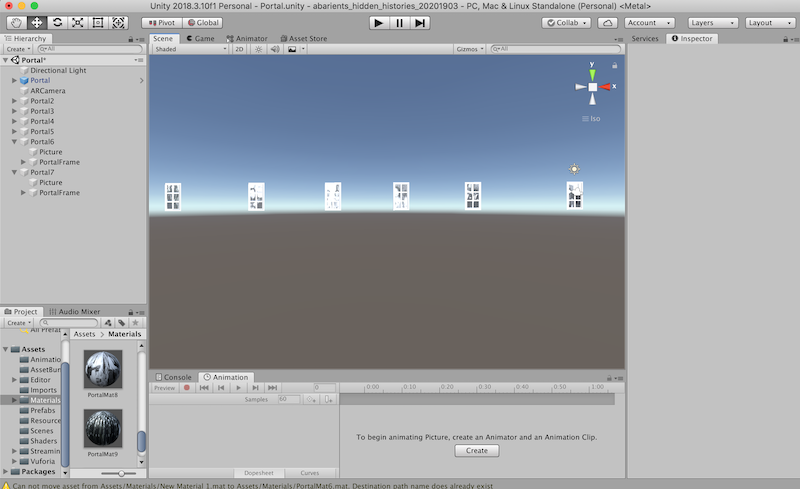
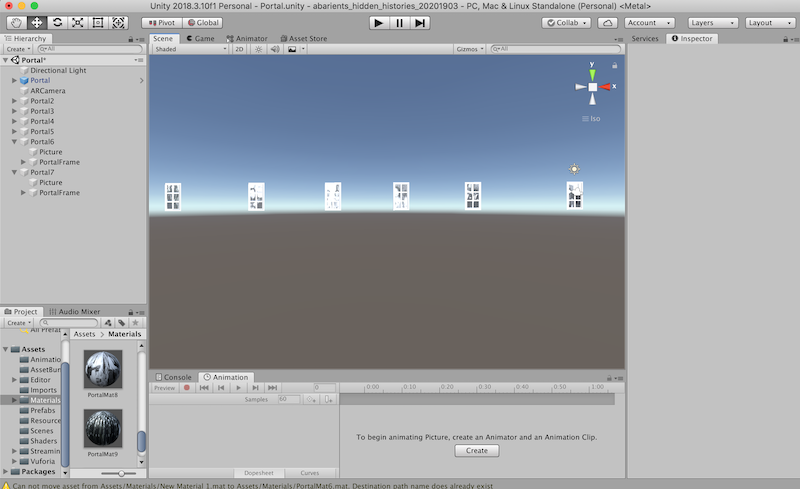

"Peek"
AR Poise App
2020
"Peek" is an AR piece that showcases windows into the past of San Diego City, specifically into the Filipino history their. To experience this piece, the ARpoise app by Tamiko Thiel must be downloaded. After, double click on the ARpoise icon, enter lat/lat: 32 long: -122, click on layer RhAngelabelle.
San Jose’s Hidden Histories Artist Call had inspired me to think of my connections, and things that I have overlooked. San Jose to many here, is San Diego to me. I was born in the Philippines but I was raised in San Diego. I lived my life always looking forward growing up. There was history I had not known about. There were Filipinos that were there before me and they had lives far different from mine. This was my chance to take a peek.
In the articles I came across, the Filipinos were subjected to live and work in downtown San Diego, which was also known as the “skid row”.But there were silver linings in these histories. One was the lively hood of the night around the cafes and dance halls. In the article, one interviewee had stated that it had “made racism seem less important.” People came there to dance and enjoy themselves. So you would see a lot of Filipinos, Mexicans, and White Americans dancing together, even with the racial tension. I peiced gathered images from the article https://sandiegohistory.org/journal/v54-1/pdf/Guevarra.pdf. This peek into history has allowed me to be more grateful for the times we have now, and reflect on our current situation and be hopeful about pushing through.
Process:
I used unity for most of the creation for this final project. For the window, I followed the tutorial https://www.youtube.com/watch?v=iV683Zf51Us, to add a "portal" into the history. It required making two custom shaders and attaching it to materials. You then would attach one material to the window, and the seperate material for the object that needs to be viewed only within the window (each image had a unique material). I felt that seeing a parallax between the window and image gave it more of a feeling that the window was in the space of the user.At first I thought I wanted a portal to open up, but I think the simplicity of a window frame gave it a more humble and home-y feeling.